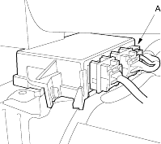
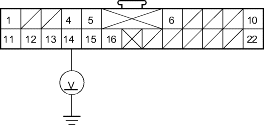
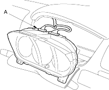

- Disconnect the U3o connector (A) from the SRS unit.

- Connect a voltmeter between the No. 14 terminal (+) of C1 connector and body ground. Turn the ignition switch ON (II), and measure voltage. There should be 0.5 V or less.
C1 CONNECTOR

Wire side of female terminals
Is voltage as specified?
YES - Faulty SRS unit; replace the SRS unit. 
NO - Short to power in the PNK wire of dashboard wire harness A or in the floor wire harness; replace the faulty harness.
- Turn the ignition switch OFF. Check the No. 19 (7.5A) fuse in the under-dash fuse/relay box.
Did fuse No. 19 (7.5A) blow?
YES - Go to step 12.
NO - Go to step 10.
- Disconnect the C2 connector (A) from the gauge assembly.
